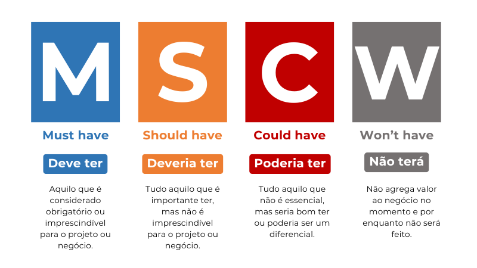

3.6: Priorização com a Técnica MoSCoW
Introdução: O Dilema do Escopo Infinito
É comum que, durante a fase de elicitação, os clientes listem centenas de requisitos, acreditando que todos são igualmente urgentes. No entanto, recursos (tempo, dinheiro e equipe) são finitos. Se tudo é prioridade, nada é prioridade.
A técnica MoSCoW é um método de priorização que fornece uma linguagem comum para que o negócio e a TI decidam o que trará valor real agora e o que pode esperar. A priorização é um processo de negociação contínua.
1. A Anatomia do Acrônimo
O nome MoSCoW é um mnemônico formado pelas iniciais das quatro categorias de prioridade (com as letras "o" adicionadas apenas para facilitar a pronúncia):
M - Must Have (Tenho que fazer)
Estes são os requisitos críticos e inegociáveis. Sem eles, o produto simplesmente não funciona ou não atende ao seu propósito legal/operacional.
- Critério: Se este requisito for retirado, o lançamento do sistema deve ser cancelado.
- Exemplo: "O sistema deve processar o pagamento via cartão para finalizar o pedido." (Em um e-commerce).
S - Should Have (Devo fazer)
Requisitos importantes, mas não vitais para o lançamento imediato. São funcionalidades que agregam muito valor, mas que possuem soluções temporárias (contornos manuais) se necessário.
- Critério: A ausência causa dor ao usuário, mas o sistema ainda é funcional.
- Exemplo: "O sistema deve permitir a recuperação de senha via SMS." (Pode ser feito via e-mail na primeira versão).
C - Could Have (Poderia fazer)
Também conhecidos como "Nice-to-have" (Gostaria de ter). São desejos que melhoram a experiência ou a estética, mas têm baixo impacto no objetivo central do negócio.
- Critério: Só serão feitos se houver tempo e orçamento sobrando após os itens 'M' e 'S'.
- Exemplo: "O sistema deve permitir a personalização das cores do painel pelo usuário."
W - Won't Have (Não farei desta vez)
Requisitos que foram discutidos, mas que o time e o cliente concordaram que não entrarão nesta entrega ou release.
- Importância: Esta categoria é fundamental para evitar o "Scope Creep" (aumento descontrolado de escopo). Ela registra que o pedido foi ouvido, mas foi adiado para o futuro.
- Exemplo: "O sistema deve ter integração com realidade aumentada para visualização de produtos."

2. Regras de Ouro para uma Priorização Saudável
Para que o projeto tenha margem de segurança, a indústria utiliza a seguinte proporção de esforço:
- Must Haves: Não devem ultrapassar 60% do esforço total do projeto.
- Should + Could: Devem compor os 40% restantes.
Por que essa divisão? Se os imprevistos surgirem (e eles surgirão), você tem 40% de requisitos que podem ser adiados sem comprometer a entrega principal do sistema. Se você definir 90% como "Must Have", qualquer erro de estimativa resultará em atraso na entrega final.
3. O Papel do Analista na Negociação
Muitas vezes, o cliente dirá que "tudo é Must Have". O analista deve atuar como mediador técnico:
- Questione a Dependência: "Se não entregarmos isso na segunda-feira, a empresa para de funcionar?"
- Identifique Alternativas: "Podemos fazer esse cálculo manualmente em uma planilha nos primeiros 15 dias?"
- Avalie o Risco: Requisitos com alto risco técnico ou muitas incertezas raramente devem ser "Must Have" em versões iniciais.
4. Relação com a Matriz de Rastreabilidade
Uma vez priorizados, os requisitos 'M' (Must Have) são os primeiros a serem detalhados nos Diagramas de Caso de Uso e Sequência (UML). A rastreabilidade garante que o esforço da equipe de desenvolvimento esteja focado exatamente no que o negócio definiu como vital.
🛠️ Prática Profissional: O Caso do App de Delivery
Imagine que você está priorizando o MVP (Produto Mínimo Viável) de um app de entregas. Classifique os requisitos abaixo usando MoSCoW:
- Listagem de restaurantes próximos. [ ]
- Pagamento via criptomoedas. [ ]
- Carrinho de compras e fechamento de pedido. [ ]
- Rastreamento do entregador em tempo real no mapa. [ ]
- Envio de cupons de desconto por notificação push. [ ]
📝 Resumo Técnico
- M: Obrigatório (Sobrevivência).
- S: Importante (Eficiência).
- C: Desejável (Satisfação).
- W: Futuro (Planejamento).